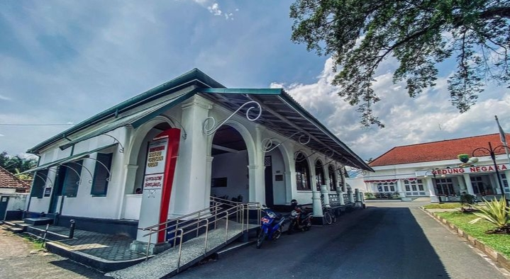

Museum Prabu Geusan Ulun didirikan pada tahun 1974 untuk mengamankan dan melestarikan warisan Kerajaan Sumedang Larang, kerajaan yang menjadi penerus kejayaan Kerajaan Pajajaran. Nama museum ini diambil dari nama raja yang paling terkenal, yaitu Prabu Geusan Ulun, yang memimpin pada akhir abad ke-16. Di sini tersimpan koleksi benda pusaka yang sangat langka, seperti mahkota raja, pakaian kebesaran, hingga senjata kuno. Museum ini adalah pusat edukasi sejarah di mana setiap artefak memiliki narasi tentang diplomasi, kepemimpinan, dan budaya luhur masyarakat Sumedang di masa lalu.
← Kembali ke Daftar